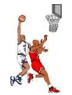

|  |
Henry Higgins is the player-coach of a basketball team. His team, known as Henry's Hoopsters, plays in a 3-on-3 league in his city's recreational department.
Last season his team set a new record for most goals (or baskets) made in the playoffs. Find the number of baskets made by his team, given the following facts:
Extra: How many points did the Hoopsters score in the playoffs?
| Comments? Send e-mail. | Back to top | Go back to Home Page | Go back to Contents |